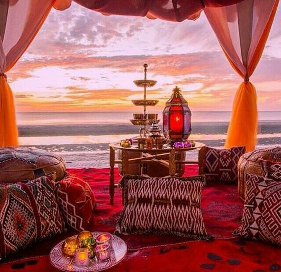
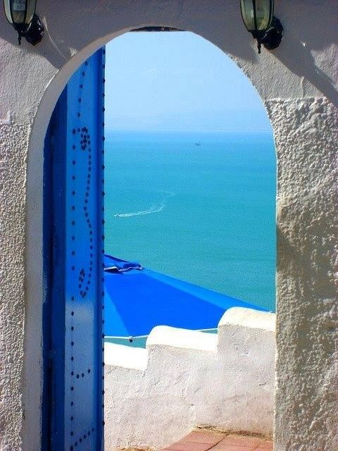
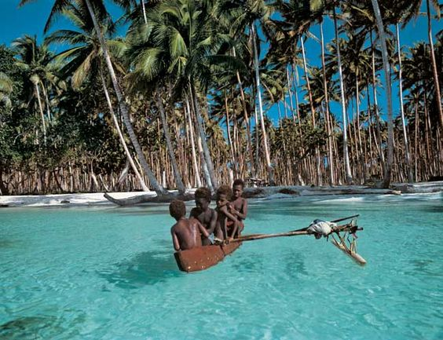
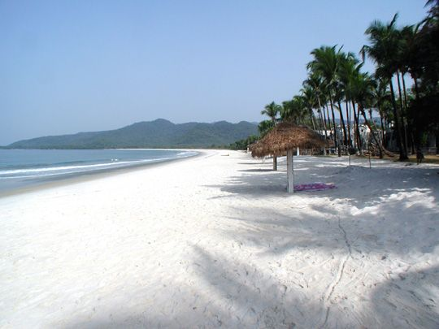
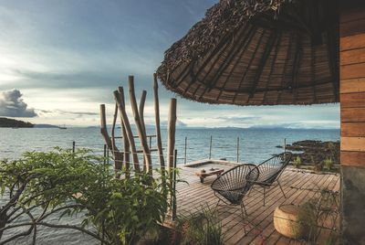
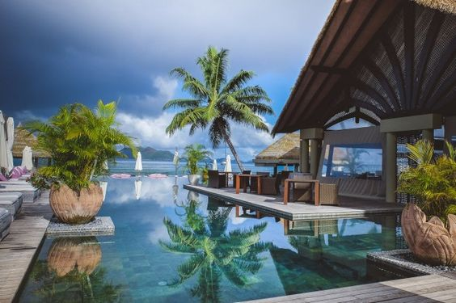
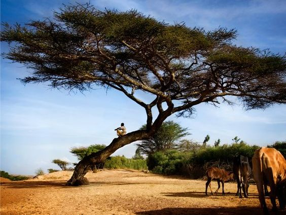

MOROCCO
Morocco is a North African country that has a coastline on both the North Atlantic Ocean and the Mediterranean Sea.

TUNISIA
It may be but a slim wedge of North Africa’s vast horizontal expanse, but Tunisia has enough history and diverse natural beauty to pack a country many times its size.

PAPUA NEW GUINEA
Guinea is a former French colony that borders Guinea-Bissau and Senegal to the north, Mali on the north and north-east, Côte d'Ivoire to the east and Liberia and Sierra Leone to the south.

SIERRA LEONE
Sierra Leone, country of western Africa. The country owes its name to the 15th-century Portuguese explorer Pedro de Sintra, the first European to sight and map Freetown harbour.

MADAGASCAR
Madagascar has two seasons: a hot, rainy season from November to April, and a cooler, dry season from May to October.

SEYCHELLES
There aren’t many places on Earth where hawksbill turtles feel so unthreatened that they come ashore in broad daylight to lay their eggs. The Seychelles is one place where they do.

ETHIOPIA
Ethiopia is like nowhere else on the planet, a beautiful country blessed with a peerless history, fabulous wildlife and some of Africa's most soulful peoples.